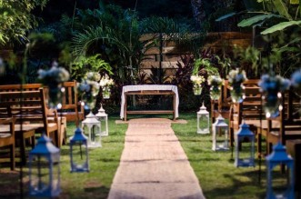
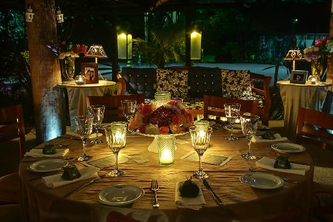

O Estação Marupiara é um restaurante especializado em culinária brasileira, com ingredientes típicos e um toque contemporâneo. Uma casa com gastronomia afetiva e um tempero que transporta o visitante para uma experiência gastronômica intensa e única. cuidadosamente decorado e com um cardápio especial elaborado pela chef Vivi Moraes. Durante o dia, a pedida é aproveitar as mesinhas no charmoso espaço ao ar livre. À noite, a iluminação com luz de velas dá o tom do jantar.
Endereço: Rua Prof. Manuel Saturnino Amaral, 29 - Joaquim Egídio, Campinas - SP, 13108-044
Visite o site oficial para mais informações.
Pensado na experiênia em família, o Vila Paraíso pussui uma área verde preservada e um lago. Fica no distrito de Joaquim Egídio e possui um cardápio bem variado.
Endereço: R. Dr. Heitor Penteado, 1716 - Joaquim Egídio, Campinas - SP, 13108-002
Visite o site oficial para mais informações.
Fundado em 1995, o Cafezal foi inspirado em uma antiga casa de fazenda, trazendo um pouquinho da roça para a cidade. Com Shows ao vivo e decoração inteligente, é o local ideal para um jantar à 2.

Endereço: R. Dr. Diogo Prado, 40 - Cambuí, Campinas - SP, 13024-210
Visite o site oficial para mais informações.